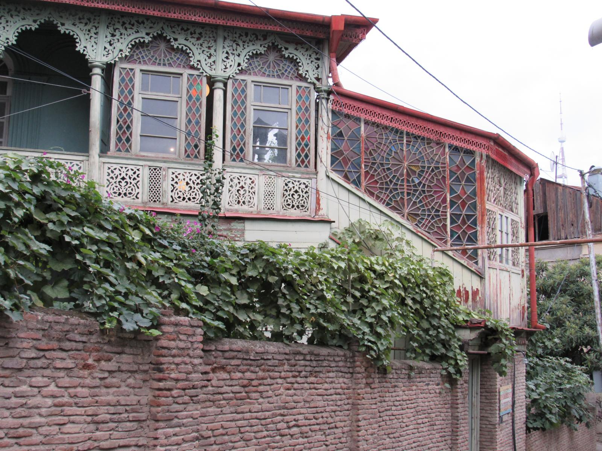
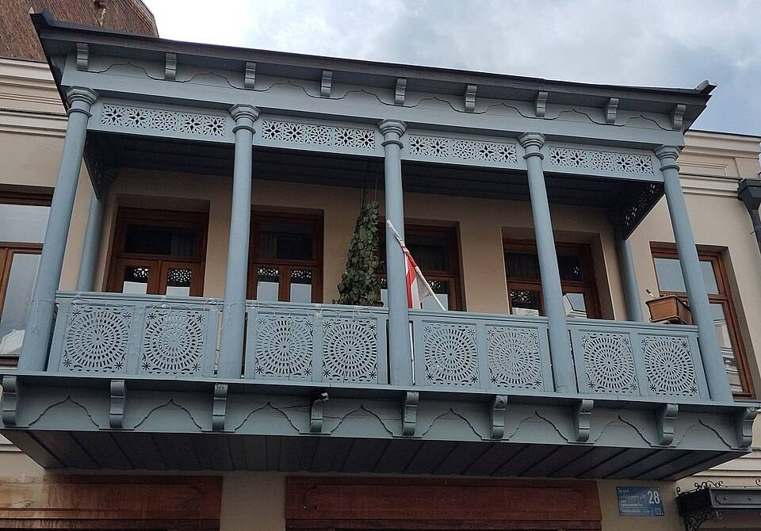
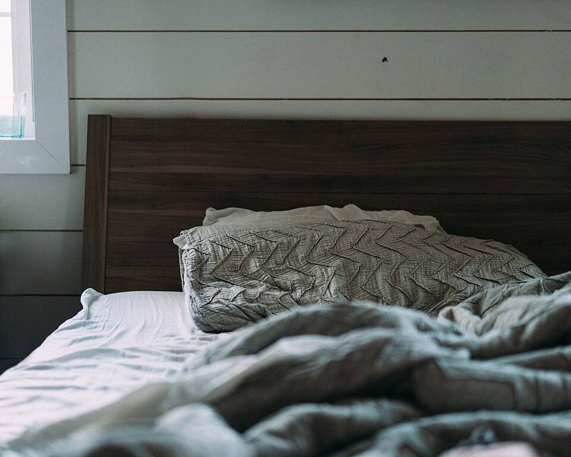
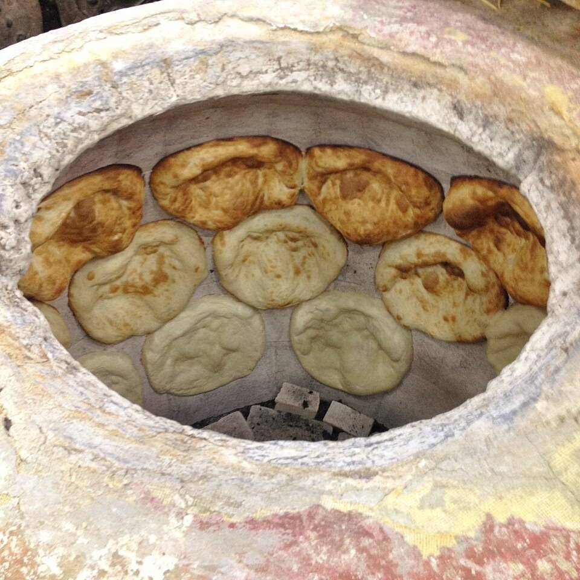
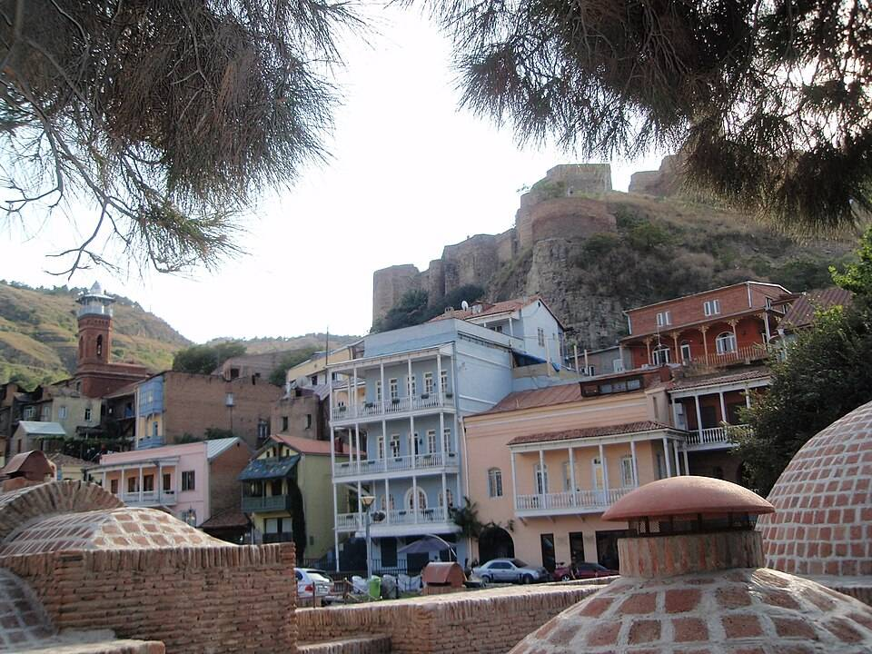
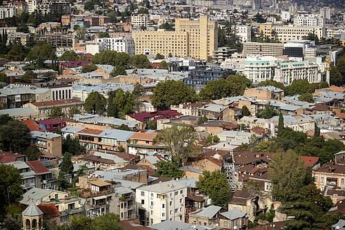
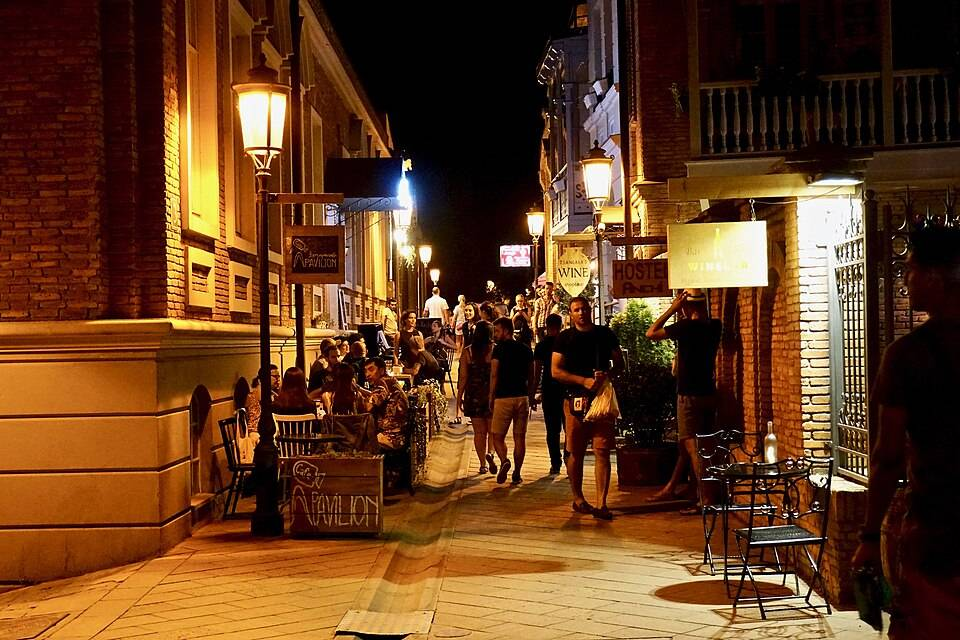

თორმეტოთახიანი სასტუმრო ძველ სოლოლაკში
1907 წლის სავაჭრო სახლი თბილისში, ლეღვის ქვეშ ცეცხლზე მომზადებული კერძების რესტორნით. ოთახები 245 ₾-დან.

მისამართი
თბილისი რუკაზე ნახვა
- შესვლა
- 14:00-დან
- გასვლა
- 12:00-მდე
- საუზმე
- 8:00–10:30
- აეროპორტიდან40 წუთი; ჩვენი მძღოლი დაგხვდებათ 70 ₾-ად
- პარკინგისახლთან არ არის; საჯარო ავტოსადგომი 3 წუთშია

სახლი, აშენებული 1907 წელს
1907 წელს ღვინით მოვაჭრემ ააშენა: ჩუქურთმიანი კიბით, მოხატული ჭერით და აივნით, სადაც ვახშამი ეტევა. გასული საუკუნის დიდ ნაწილში აქ ბინები იყო.
სამი წელი ვაღდგენდით: ჭერი ხელით გავწმინდეთ, კიბე მისივე მუხისგან აღვადგინეთ, ეზო ლეღვის ხემდე გავასუფთავეთ. ლიფტი არ არის. ოთახები სამ სართულზეა, სხვენამდე 54 საფეხურია.
- აშენდა1907 წელს, ღვინით მოვაჭრისთვის
- აღდგა2023–2026 წლებში, ხელით
- ოთახები12, სამ სართულზე, ეზოს გარშემო

ოთახები და ფასები
საუზმე ყველა ფასში შედის. შესვლა 14:00-დან, გასვლა 12:00-მდე.

ორადგილიანი ოთახი ეზოსკენ
2 სტუმარი · 22 მ² · ლეღვის ხედით
245 ₾-დან ღამეში
ამ ოთახის დაჯავშნა
ორადგილიანი ოთახი აივნით
2 სტუმარი · 26 მ² · ჩუქურთმიანი აივანი ქუჩაზე
290 ₾-დან ღამეში
ამ ოთახის დაჯავშნა
საოჯახო ოთახი სხვენში
3 სტუმარი · 38 მ² · სახურავის ფანჯარა ნარიყალასკენ
365 ₾-დან ღამეში
ამ ოთახის დაჯავშნა
ვაჭრის ოთახი
2 სტუმარი · 52 მ² · მოხატული ჭერით
470 ₾-დან ღამეში
ამ ოთახის დაჯავშნაFig & Ember, ეზოს რესტორანი
30 ადგილი ლეღვის ქვეშ, ყველაფერი ვაზის ნეკერზე მზადდება. ღიაა ყველასთვის, არა მხოლოდ ჩვენი სტუმრებისთვის.




ოთხი გასეირნება, 12 წუთამდე
აქ ყველაფერი სახლიდან დაღმართზეა, უკან ტაქსი დაახლოებით 6 ₾ ჯდება.
-

გოგირდის აბანოები, 9 წუთი
საღამოსთვის აბანოში ცალკე ოთახი დაჯავშნეთ. ჩვენ წინასწარ დავრეკავთ და პირსახოცებს მოგცემთ.
-

ლეღვთახევის ჩანჩქერი, 12 წუთი
აბანოებს გაუარეთ და ხეობაში შედით. დილით წადით, ტურებამდე.
-

საბაგირო ნარიყალამდე, 7 წუთი
ციხემდე ადით და მთელი ქალაქი ერთად დაინახეთ, მერე ბოტანიკური ბაღით ჩამოდით.
-

ძველი ქალაქი ღამით, 10 წუთი
ათი წუთი ფარნებით განათებულ ქუჩებში, მერე უკან, ბოლო ჭიქისთვის After Dusk-ში.
კითხვები ჩამოსვლამდე
სხვა კითხვები WhatsApp-ზე მოგვწერეთ. იმავე დღეს გიპასუხებთ.
გაუქმება
უფასოდ, ჩამოსვლამდე 7 დღით ადრე. შემდეგ პირველი ღამის ფასი რჩება.
საუზმე
ყველა ოთახის ფასში, 8:00–10:30, Fig & Ember-ში.
ბავშვები და შინაური ცხოველები
ბავშვებს სიამოვნებით ვხვდებით, ბავშვის საწოლი უფასოა. ძაღლები შეთანხმებით, ეზოს ოთახებში.
Wi-Fi და კონდიციონერი
ყველა ოთახში. კედლები 70 სმ სისქისაა, ამიტომ ოთახებში მშვიდია.
ერთდღიანი ტურები
მცხეთა, კახეთის მარნები და ყაზბეგი, ჩვენი მძღოლით. ფასი WhatsApp-ზე იკითხეთ.
კიბე და ლიფტი
ლიფტი არ არის: სამი სართული და 1907 წლის კიბე. თუ კიბე გიჭირთ, ეზოს ოთახი ითხოვეთ.
ოთახის ან მაგიდის დაჯავშნა
პირდაპირ ჯავშნისას ფასი საუკეთესოა. მოთხოვნა WhatsApp-ში გაიხსნება, ყველაფერი უკვე ჩაწერილი იქნება, ბარათი საჭირო არ არის.